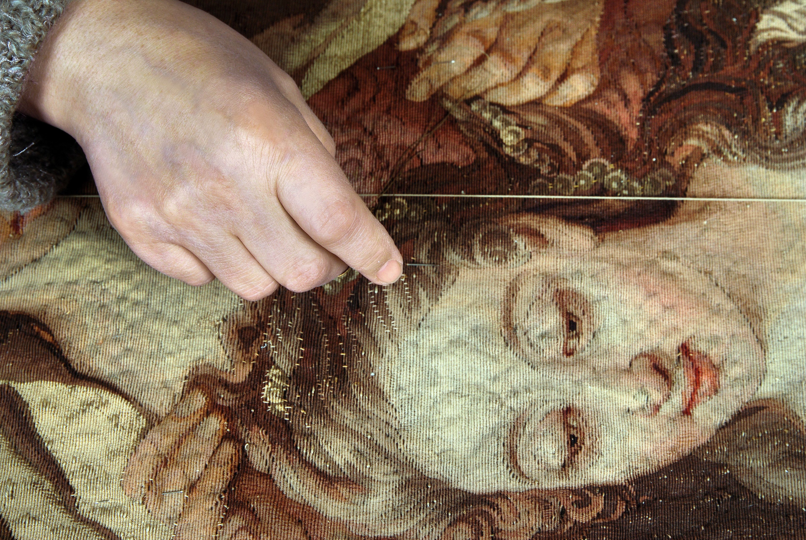
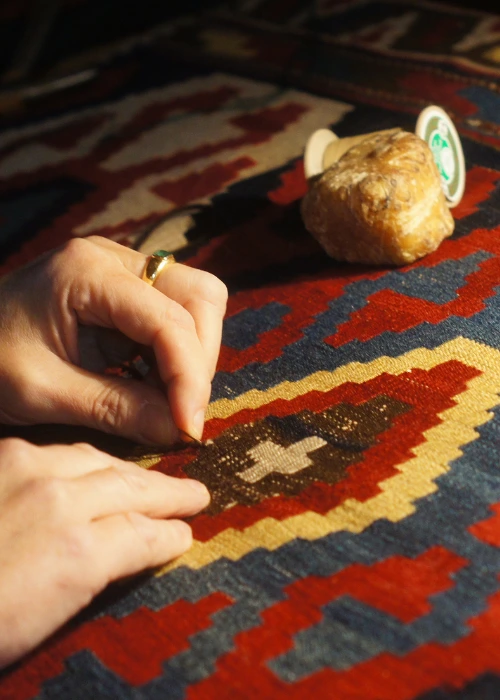

Nos Expertises
Une approche sur-mesure pour chaque pièce d'exception

Nettoyage
Nettoyage professionnel
Techniques ancestrales et technologies modernes pour un nettoyage en profondeur respectueux des fibres.
- Analyse préalable des matériaux
- Nettoyage à sec ou humide selon besoin
- Traitement des taches spécialisé
- Séchage contrôlé

Restauration
Restauration d'art
Redonner vie aux pièces anciennes avec le savoir-faire de nos maîtres artisans.
- Retissage à la main
- Réparation des lisières
- Consolidation de la structure
- Respect des techniques originales

Conservation
Conservation préventive
Préserver l'authenticité et la beauté de vos œuvres textiles pour les générations futures.
- Traitement anti-parasitaire
- Contrôle d'humidité
- Protection UV
- Conseils d'entretien